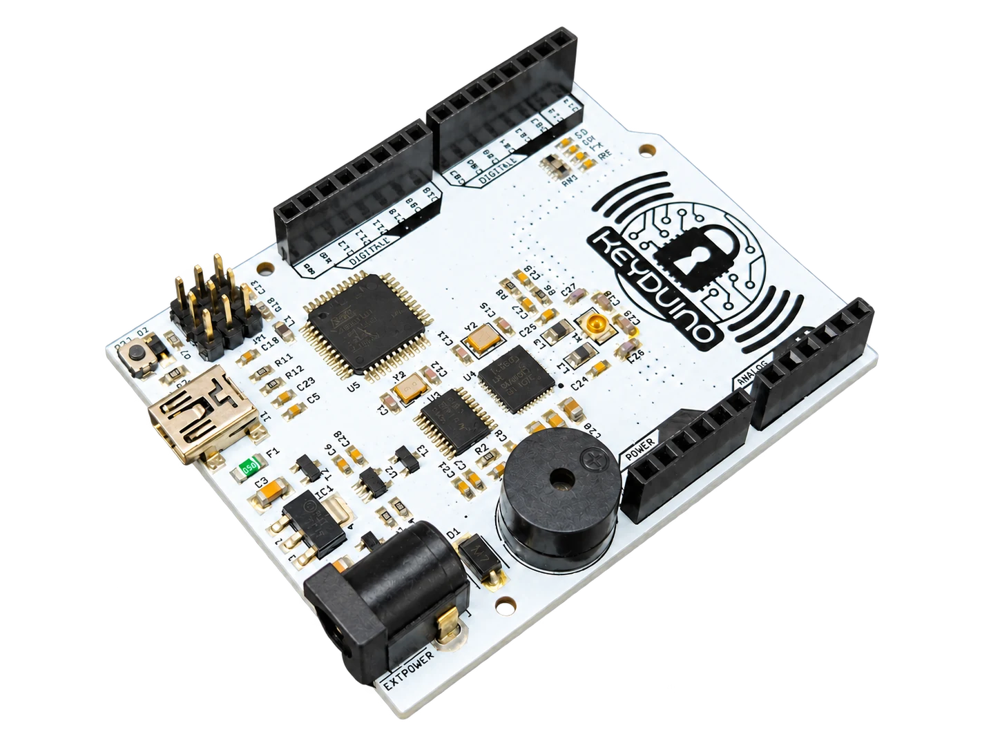

Partir de votre besoin
Fonctions attendues, alimentation, encombrement et interfaces : le cadrage permet de choisir une architecture adaptée à votre usage.
Une carte sur mesure pour mesurer, piloter ou connecter votre produit.

Fonctions attendues, alimentation, encombrement et interfaces : le cadrage permet de choisir une architecture adaptée à votre usage.
Schéma, circuit imprimé, intégration de capteurs et essais du prototype. Le traitement du signal peut compléter la chaîne d’acquisition selon les besoins.
Prototype, fichiers de conception et résultats d’essais sont définis dans le périmètre de la prestation. Vous pouvez venir avec une idée ou une carte à faire évoluer.
Basé à Wattignies près de Lille, Orbivia définit avec vous les étapes et les livrables de votre projet.